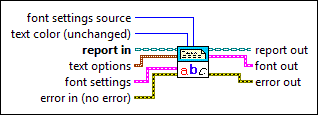
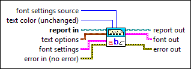

Set Report Font VI
Owning Palette: Report Generation VIs
Requires: Base Development System
Sets the font properties of the report, including those in the headers and footers.

 Add to the block diagram Add to the block diagram |
 Find on the palette Find on the palette |
Owning Palette: Report Generation VIs
Requires: Base Development System
Sets the font properties of the report, including those in the headers and footers.

| Add to the block diagram |
Find on the palette |
 |
font settings source (Report Generation Toolkit) specifies the way in which you want to select font settings. The VI ignores this input for HTML reports.
|
||||||||||||||||||||||||||||||||
 |
text color is the color of the text in the report. You can wire a color box constant to this input. The default is T, which leaves the text unchanged. | ||||||||||||||||||||||||||||||||
 |
report in is a reference to the report whose appearance, data, and printing you want to control. Use the Create Report VI to generate this LabVIEW class object. | ||||||||||||||||||||||||||||||||
 |
text options specifies how the text appears in the report.
| ||||||||||||||||||||||||||||||||
 |
font settings indicates the font settings a report uses.
| ||||||||||||||||||||||||||||||||
 |
error in describes error conditions that occur before this node runs. This input provides standard error in functionality. | ||||||||||||||||||||||||||||||||
 |
report out is a reference to the report whose appearance, data, and printing you want to control. You can wire this output to other Report Generation VIs. | ||||||||||||||||||||||||||||||||
 |
font out (Report Generation Toolkit) contains the font settings the VI uses for formatting, which you can use in other VIs. The values are valid for Microsoft Office reports only.
| ||||||||||||||||||||||||||||||||
 |
error out contains error information. This output provides standard error out functionality. |
The available properties include italic, bold, strikethrough, underline, color, font name, font size, character set, and weight. The font you specify in the VI becomes the default font for the report.
If you use the Set Report Font VI to set a font in an HTML report, the <font> tag is used to set the font. This tag remains valid until the end of the file. There is no </font> used.
The table generated by the Append Table to Report VI does not use the font defined by the Set Report Font VI. The header and body texts of the table have different default fonts. You can use HTML tags to configure the text font for each cell of the table. Refer to the example at ni.com for more information about how to generate tables with different fonts.